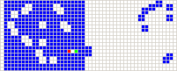

A cellular automaton is a collection of cells on a grid that evolves over time.
One way to simulate a two-dimensional cellular automaton is with an infinite sheet of graph paper along with a set of rules for the cells to follow.
In a cellular automaton, a Garden of Eden is a configuration that has no predecessor. It can be the initial configuration of the automaton but cannot arise in any other way. John Tukey named these configurations after the Garden of Eden in Abrahamic religions, which was created out of nowhere.
The universe of John Horton Conway's Game Of Life is an infinite, two-dimensional orthogonal grid of cells, each of which is in one of two possible states, live or dead. Every cell interacts with its eight neighbours. At each step in time, the following transitions occur:
Rules
- Any live cell with fewer than two live neighbours dies, as if by underpopulation.
- Any live cell with two or three live neighbours lives on to the next generation.
- Any live cell with more than three live neighbours dies, as if by overpopulation.
- Any dead cell with exactly three live neighbours becomes a live cell, as if by reproduction.
In cellular automata, a methuselah is a small "seed" pattern of initial live cells that take a large number of generations in order to stabilize.
Wireworld is Turing-complete cellular automaton particularly suited to simulating transistors.
Wireworld uses what is called the Moore neighborhood, which means that in the rules above, neighbouring means one cell away in any direction, both orthogonal and diagonal.
Rules
- head, becomes tail
- tail, becomes conductor
- conductor, becomes head with 1 or 2 heads neighbors.
A second-order reversible cellular automata with four states.
Stable gliders are three-cell "ants" moving in vertical and horizontal directions with unit speed with reflections, collisions and splitting. Unlike wireworld, the ants can be used for construction of different kinds of "wireless circuits."
There are four states: 0 (empty, white), 1 (red), 2 (green), 3 (blue).
- A cell with state 0 or 2 (white or green) is called "even"
- and a cell with state 1 or 3 (red or blue) is called "odd"
A step may be divided into two stages:
First stage: Mark all cells satisfying two conditions: (1) total number of odd cells in four closest positions (up, down, left, right) is one or two, (2) cells in four diagonal positions are even.
Second stage: For unmarked: exchange red and green cells (1<->2). For marked cells: change empty into red, red into blue, blue into green, green into empty (0->1->3->2->0).